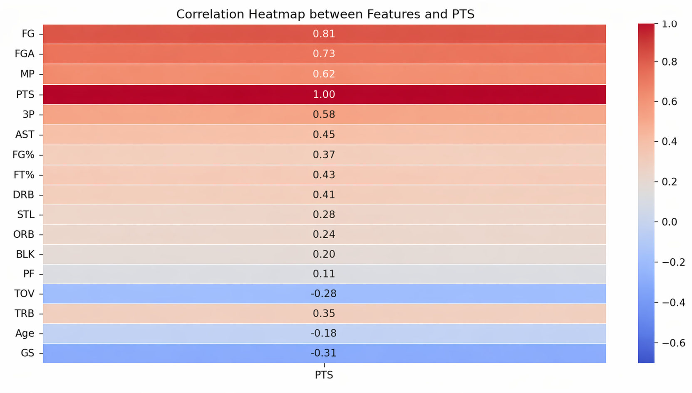

PERSONAL PROJECT
NBA 선수 통계 데이터를 기반으로
머신러닝을 통해 선수 득점(PTS)을 예측해본 토이프로젝트

직관적으로도 영향이 적을 것으로 예상되는 변수들이었지만, 실제 데이터로 확인한 뒤 입력 변수에서 제외하는 방식으로 모델을 단순화했습니다.
단순한 직관이 아니라, 데이터를 기반으로 변수 선택을 시도했다는 점에서 의미가 있었습니다.
좋아하던 분야를
기술로 직접 건드려보고 싶었습니다.
평소 NBA에 관심이 많았고, 이전에 Node.js 기반 웹 프로젝트를 진행하면서 기술과 NBA를 접목하는 일에 더 큰 흥미를 느끼게 되었습니다.
이후 딥러닝 수업을 들으며 스포츠 통계와 머신러닝을 연결할 수 있겠다는 생각이 들어 이 프로젝트를 시작했습니다.
목표는 NBA 선수들의 통계 데이터를 바탕으로 선수들의 포인트(PTS)를 예측하는 모델을 만들어보고, 최종적으로는 웹 애플리케이션 안에 PTS 예측 기능으로 연결해보는 것이었습니다.
이 프로젝트는 높은 정확도의 모델을 만드는 것 자체보다, 내가 좋아하는 데이터를 직접 모으고 분석하면서 머신러닝이 실제로 어떻게 동작하는지 몸으로 이해해보려는 시도에 가까웠습니다.
NBA 통계 데이터 수집
urllib와 BeautifulSoup를 활용해 NBA 통계 사이트에서 선수 데이터를 수집하고, CSV 파일로 저장해 분석과 예측에 활용했습니다.
전처리 및 피처 선택
결측치가 포함된 항목은 fillna(0)로 처리하고, 히트맵을 통해 PTS와의 상관관계를 확인한 뒤 FG%, FT%, Age, BLK, ORB, Pos, Tm 등 상대적으로 영향이 낮거나 불필요하다고 판단한 컬럼을 제거했습니다.
모델 학습을 위한 데이터 정규화
MinMaxScaler를 사용해 입력 데이터를 0~1 범위로 정규화하고, Train/Test Set으로 분리해 학습을 진행했습니다.
Keras 기반 PTS 예측 모델 구현
TensorFlow.Keras의 Dense Layer를 활용해 128 → 64 → 16 → 1 구조의 신경망을 구성하고, optimizer='adam', loss='mse'로 학습시켰습니다.
모델 저장 및 재사용
학습한 모델을 .h5 파일로 저장하고, 이후 다시 불러와 예측에 활용할 수 있도록 구성했습니다.
모델을 만드는 것보다 먼저,
어떤 데이터를 남기고 어떤 데이터를 제외할지 판단하는 과정이
중요했습니다.
결측치부터 정리
자유투 성공률, 3P 성공률처럼 시도 자체가 없는 선수들은 NaN 값이 발생했기 때문에, 먼저 결측치를 0으로 치환해 모델이 정상적으로 학습될 수 있도록 정리했습니다.
히트맵으로 상관관계 확인
입력 변수가 많아질수록 학습 속도와 정확도에 영향을 줄 수 있다고 생각해, 각 스탯이 PTS와 얼마나 관련이 있는지 히트맵으로 시각화해 확인했습니다.
불필요한 피처 제거
상관관계가 낮다고 판단한 FG%, FT%, Age, BLK, ORB와 예측에 직접 필요하지 않은 팀, 포지션 컬럼을 제거해 입력 데이터를 단순화했습니다.
정규화 후 모델 학습
MinMaxScaler로 데이터를 정규화한 뒤, 학습/검증 데이터를 분리해 Keras 모델을 학습시켰습니다.
예측값보다 해석에 집중
단순히 결과 수치만 보기보다, 어떤 스탯이 실제로 득점과 연결되는지를 확인하고 왜 예측이 정확하지 않은지도 같이 해석하려고 했습니다.
성공률보다,
시도 횟수가 더 크게 작용했습니다.
히트맵을 확인해보니 2P%, 3P%, FG% 같은 성공률 지표는 예상보다 PTS와의 상관관계가 높지 않았습니다.
반대로 실제 득점과는 FGA, 3PA, 2PA처럼 얼마나 많이 시도했는지가 더 큰 영향을 준다고 해석할 수 있었습니다.
즉, 효율이 좋은 선수라도 시도 횟수가 적으면 전체 득점은 낮을 수 있고, 득점 예측에서는 성공률만큼이나 시도량이 중요하다는 점을 직접 확인했습니다.
입력 변수가 많아질수록 모델이 단순하지 않았습니다.
처음에는 다양한 스탯을 많이 넣으면 더 정확할 것이라 생각했지만, 실제로는 변수 수가 많다고 해서 모델 성능이 무조건 좋아지지 않았습니다.
그래서 히트맵을 활용해 관련이 낮은 컬럼을 제거하며 피처를 줄여보는 방식으로 개선을 시도했습니다.
은닉층을 늘린다고 정확도가 오르지 않았습니다.
모델 구조를 복잡하게 만든다고 해서 예측 성능이 반드시 좋아지는 것은 아니라는 점을 직접 경험했습니다.
이 과정에서 모델 구조보다도 데이터 선택과 전처리가 더 중요하다는 것을 느꼈습니다.
과적합 문제를 직접 겪었습니다.
학습을 반복할수록 훈련 데이터에는 맞아가지만, 검증 데이터 성능은 함께 좋아지지 않는 문제가 있었습니다.
epochs를 조절해보면서 과적합을 줄이려 했고, 이 과정에서 early stopping이나 교차 검증 같은 방법의 필요성을 공부하게 되었습니다.
실행은 되었지만, 완성도 높은 모델은 아니었습니다.
결과가 나오기는 했지만 실제 예측 도구로 활용하기에는 정확도와 해석 측면에서 부족한 점이 많았습니다.
그래서 오히려 왜 정확하지 않았는지를 다시 돌아보게 되었고, 더 많은 변수와 더 나은 검증 방식이 필요하다는 점을 이해하게 되었습니다.
모델보다,
데이터와 전처리가 더 중요했습니다.
데이터 수집 과정 자체를 경험했습니다.
urllib과 BeautifulSoup을 사용해 NBA 통계 사이트에서 직접 데이터를 수집하며, 웹 테이블 구조를 파싱하는 과정을 이해했습니다.
데이터 전처리의 중요성을 느꼈습니다.
결측값(NaN)을 처리하고, 필요 없는 데이터를 제거하는 과정에서 데이터 상태가 모델 결과에 직접적인 영향을 준다는 것을 배웠습니다.
특히 fillna와 drop을 통해 데이터를 직접 다루며 전처리 과정의 중요성을 체감했습니다.
모델 구조보다 입력 데이터가 더 중요했습니다.
은닉층을 늘린다고 해서 정확도가 반드시 올라가는 것이 아니라, 어떤 데이터를 넣느냐가 더 큰 영향을 준다는 것을 경험했습니다.
과적합 문제를 직접 경험했습니다.
epochs를 조정하면서 학습을 진행했지만, 검증 데이터 성능이 개선되지 않는 경우를 통해 과적합과 일반화 문제를 이해하게 되었습니다.
이 과정에서 early stopping이나 교차 검증의 필요성도 함께 학습했습니다.